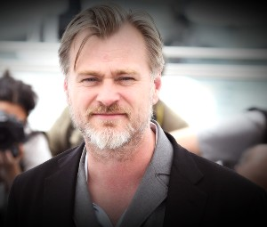
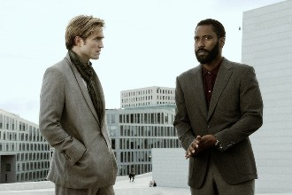

 Christopher Nolan, merakla beklenen yeni filmi Tenet ile ilgili ilgi çekici detaylar paylaşırken; filmde zaman yolculuğu olmadığını söyledi. Christopher Nolan‘ın heyecanla beklenen yeni filmi Tenet, kuşkusuz bu yılın en çok merak edilen filmlerinden biri. 17 Temmuz’da vizyona girmesi planlanan ancak koronavirüs salgını nedeniyle 31 Temmuz’a ertelenen film, uluslararası bir casusluk hikâyesine odaklanan epik bir aksiyon filmi olarak tanımlanıyor. İlk fragmanın yayınlanmasıyla çeşitli teorileri beraberinde getiren film hakkında bugüne kadar birçok haber yayınladı. İlk fragman, zaman akışında yaşanan kırılmaların ve fizik kurallarının anlamını yitirdiği aksiyon sahnelerinin olduğu bir film izleyeceğimizin sinyallerini verdi. Filmin yaratım sürecine ışık tutan The Secrets of Tenet: Inside Christopher Nolan’s Quantum Cold War isimli bir kitap ise filmin kuantum soğuk savaş filmi olacağını gün yüzüne çıkardı. Bunun ortaya çıkmasından kısa bir süre sonra John David Washington ile beraber filmin başrolünde yer alan Robert Pattinson, filmde iddia edildiği gibi zaman yolculuğunu ele alan ögelerin olmadığını açıkladı. Ayrıca her iki oyuncu da senaryoyu tam olarak anlayamadıklarını itiraf ederken, Nolan’ın bu filmle sinemada bugüne kadar benzerini görmediğimiz bir işe imza attığını savundu. Dahası yayınlanan fragmanlarda filmin kötü karakterini canlandırdığı anlaşılan Kenneth Branagh, bu durumu doğrulamayacağını, çünkü bundan kendisinin de emin olmadığını belirten açıklamalar yaparak işleri daha da karmaşık bir noktaya sürükledi. Branagh, Christopher Nolan’ın kaleme aldığı senaryoyu defalarca okumasına rağmen filmin tam olarak ne anlattığını anlayamadığını söylerken; filmdeki karakterlerin alışılmışın dışında olacağını belirtti. Tüm bu açıklamalar, senaryoyu defalarca okuyan oyuncuların filmin tam olarak neye hizmet ettiğini anlayamadığını bizlere gösteriyor. Bu durumda filmin izleyici tarafından nasıl anlaşılacağı da merak konusu oluyor. Kısa bir süre önce Entertainment Weekly’e açıklamalarda bulunan Christopher Nolan ve oyuncular, film hakkında konuşurken; izleyicinin kafasını daha da karıştıracak açıklamalara imza atıyor.
 Önce, yukarıda da bahsettiğimiz gibi, bu zaman yolculuğu konusuna bir açıklık getirmekte fayda var. Filmin senaryosu üzerinde yaklaşık altı-yedi yıldır uğraşan Christopher Nolan, Tenet’ın zaman yolculuğunu konu alan bir film olmadığını açıkladı: “Bu film bir zaman yolculuğu filmi değil. Zamanla ve zamanın fonskiyonlarının farklı yönleriyle ilişkili. Fizik dersine girmek gibi olmasın ama tersine çevirme, kendi entropisini tersyüz eden materyal fikri, bu yüzden bize göre zaman içinde geriye doğru gidiyor.” Nolan’ın bu açıklamalarında anladığımız kadarıyla, Tenet’ta zaman yolculuğuna birebir karşılık gelmeyen ancak bu tema paralelliğinde ilerleyen daha farklı şeyler göreceğiz. Fragmandan da gördüğümüz kadarıyla, büyük aksiyon sahneleriyle kotarılmış bir filmde bu konunun nasıl ele alınacağı sorusuna, filmi izleyene kadar cevap bulabilmemiz imkansız.